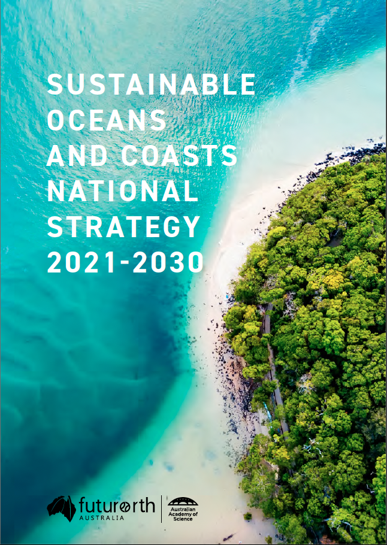

Sustainable Oceans and Coasts
I was privileged to give a talk Actionable pathways to Sustainable Oceans & Coasts at a full-day workshop on the future of Australia’s ocean and coastal ecosystems.
The workshop was for early career researchers and practitioners, providing a forum for discussing their unique perspective on how Australia can achieve a sustainable future for oceans and coasts.
The discussion focal point was Future Earth Australia’s Sustainable Oceans and Coasts National Strategy.

Check out the strategy for yourself here.
A diversity of perspectives were represented by the group, from very early career researchers just starting their Honour’s, to experienced researchers beginning to lead their own teams, to practitioners and knowledge brokers bridging the science-policy gap.
I tip my hat to the Future Earth Australia team for providing a platform for their perspectives. This is the generation that is going to see us through to a truly sustainable future, and they need to be given opportunities like this to lead us there.
The group is going to continue working together to refine their perspective on key priorities for sustaining ocean and coastal ecosystems, and publish this as a way to kick-start action.
In the meantime I wanted to share a few key take-aways I had:
- We won’t achieve our sustainability goals without multi-disciplinary, collaborative action,
- This requires open minds and a willingness to step out of our comfort zones and learn from each other
- And, most importantly:
Researchers need to do more than publish papers. We need to take a more active role in policy by volunteering as either expert reviewers or as contributing authors to policy documents. This means seeking out these opportunities, putting our hands up to get involved, (probably) experiencing some rejection, but eventually having some influence.
Sidenote, this also means University leadership needs to recognise that getting involved is just as important as publishing papers. ECRs are under immense pressure to publish a lot, very quickly.
Science would have a better chance at informing a sustainable future if ECRs were asked to focus on publishing research that can inform policy (i.e., asks the right questions), regardless of how long it takes to publish that research and how many publications it produces.
Citation
@online{buelow2024,
author = {Buelow, Christina},
title = {Sustainable {Oceans} and {Coasts}},
pages = {undefined},
date = {2024-03-03},
url = {https://cabuelow.github.io/personal-website/posts/2024-03-03-early-career-day/},
langid = {en}
}